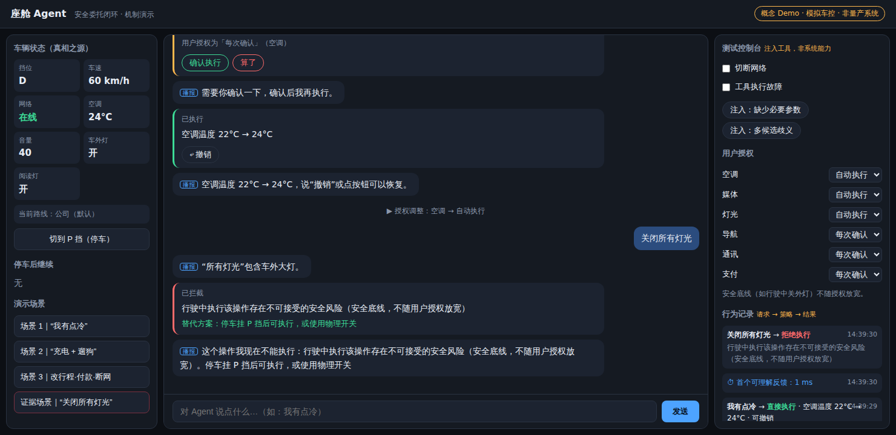
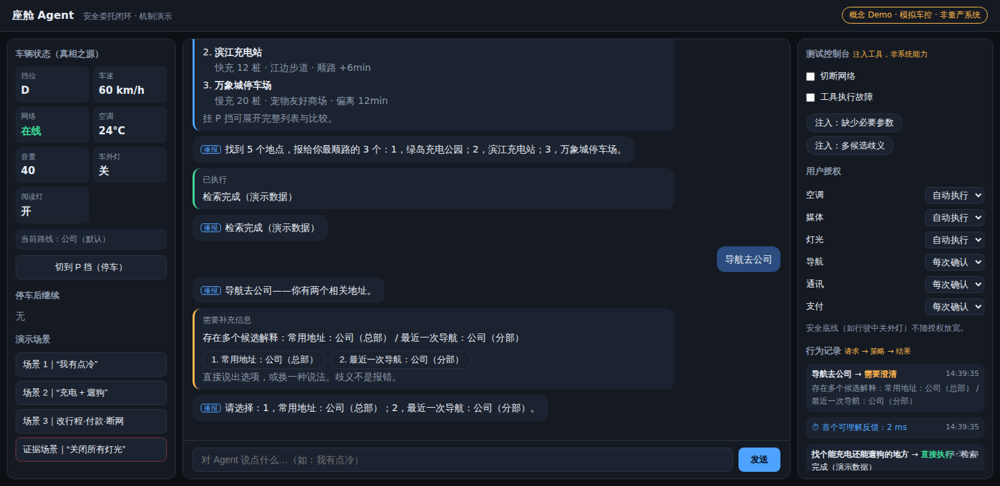
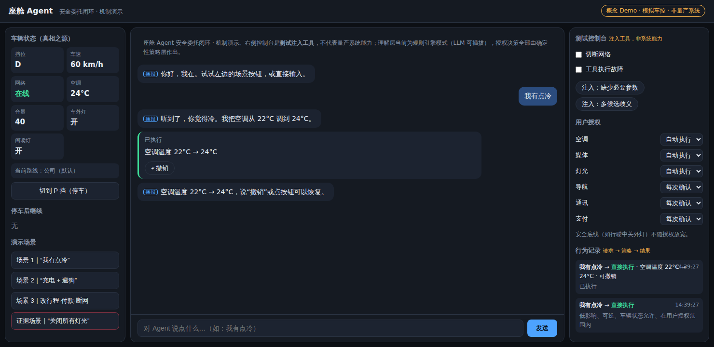

车载语音助手 → LLM 驱动座舱 Agent 的重设计

"旧框架装不下新能力:LLM 不是更聪明的意图匹配器。"
传统车载语音的交互契约是「用户说出接近指令格式的话 → 系统匹配意图 → 执行或播报失败」。LLM 打破了契约的两端:输入端,用户可以说「我有点冷」这类没有标准答案的话;执行端,Agent 可以规划多步操作、调用多个工具、主动建议。但多数量产助手把 LLM 塞回旧框架——听懂了更多话,交互上仍是黑盒执行。
当座舱助手从「命令执行器」变成「有能力但会出错的 Agent」,设计要回答的不再是「怎么让用户学会说对的话」,而是「怎么让人和一个不完全可靠的智能体在驾驶场景下安全地协作」。
不把 AI 议题平铺成知识点,而是组织成一个端到端闭环:理解 → 提案 → 授权 → 执行 → 恢复。每个阶段都有明确的设计产出,并在 Demo 中可交互验证。
不把模型表达的信心当成正确率
用户不需要知道「模型说自己有 78% 把握」,需要知道系统还缺什么信息、是否会立即执行。意图歧义由可观察信号构成:必要参数缺失、指代不明、多个工具同时匹配、表达与车辆状态冲突。
信息完整且低风险 → 进入策略层判断;存在一个关键歧义 → 复述理解并询问必要信息;多个意图并列 → 给 2-3 个候选,不猜测执行。
歧义不是报错,是换一种问法——不制造「你说错了」的失败感;驾驶中候选上限 2-3 个,语音与屏显同步编号。

流式是技术事实,不是必须暴露给用户的交互形态
驾驶场景下,逐字滚动会产生不可瞥视的半句话;用户更需要知道系统正在做什么、下一步会发生什么。
先给接受反馈——立即说明「我来查找…」,不让用户猜有没有听见;语音按句播报——攒成语义完整的句子再开口;屏显按块更新——一个步骤、一张卡片整体出现;等待可解释——「正在查充电设施」而不是抽象转圈;随时可打断,打断后保留已明确的目标与参数。
LLM 只提出候选动作,确定性的策略层决定能否执行
策略层综合四类输入:动作风险(可逆性/安全后果/涉钱涉隐私/影响第三方)× 车辆状态(P/D 挡、速度)× 用户授权(自动执行/每次确认/禁止)× 意图歧义。
四种输出:直接执行(回显 + 一键撤销)/请求确认(复述对象与后果)/停车后继续(保存任务,P 挡恢复)/拒绝执行(说明原因 + 给安全替代)。用户可以收紧授权;系统安全底线不可被用户降级。
2026 年初,多个品牌被公开报道「行驶中语音误关大灯」缺陷,其一酿成实际碰撞;厂商紧急补丁的规则——行驶中禁止语音关闭外灯、仅 P 挡且指令明确时允许——正是「动作风险 × 车辆状态」判据的现实版。策略层不是过度设计,是事故已经替行业验证过的必需品。
边界可感知(授权设置页)、可调整(底线除外)、可解释(拦截时说明关键条件)、可追溯(行为记录)。与控制中心案例的「Agent 行为可见层」直接咬合。
通道分工服从驾驶注意力预算
以 NHTSA 视觉—手动任务指南的测试标准(单次离路视线 <2s、任务累计 <12s)作为验证参考:语音播报结论与关键后果,不朗读列表;屏显放可瞥视卡片,D 挡不出现滚动与连续点按;停车态才解锁长列表、完整比较和付款;语音回显、中控卡片和车控状态指向同一个真相之源;行驶中主动播报仅限安全相关与用户订阅事项。

失败体验是 AI 产品的第一体验
每种失败都有明确的「下一步」,用户永远不站在死胡同里:断网 → 显式声明 + 降级到本地指令集,常用车控不受影响;听错/歧义 → 转确认式,指出缺失信息;事实类回答 → 标注来源,查不到就说查不到;执行失败 → 回显原因 + 保留意图上下文,「重试 / 换方式 / 算了」三选一;当前状态不允许 → 保存任务并说明恢复条件。
手动兜底是安全网,也是信任机制:任何时刻一步退回手动。用户知道随时能收回控制权,才敢把控制权交出去。
信息完整 → 策略判断 → 低风险执行 → 状态回显 → 一键撤销;把授权收紧为「每次确认」后,同一句话转入确认流程
多步提案 + 等待可解释;D 挡只给 2-3 个可瞥视候选,P 挡展开完整列表
确认改道 → 行驶中付款转「停车后继续」→ 断网显式降级,本地车控不受影响
Demo 不是完整产品,是安全委托机制的可交互证明:座舱模拟界面 + 确定性策略层 + 模拟车控工具 + 测试注入控制台(断网 / 工具故障 / 歧义注入 / 授权设置)。演示控制台明确标注为测试工具,不把注入状态包装成量产系统能力;理解层可替换(规则引擎 ⇆ LLM API),授权决策永远留在确定性策略层。
执行后说「撤销」——纠错比重说一遍快;把空调授权改为「每次确认」再说「我有点冷」;在 D 挡说「关闭所有灯光」看策略层拦截,切 P 挡再试;一键断网看降级路径。打开 Demo →
机制经 25 条脚本化测试验证:授权 × 车辆状态两态一致性、歧义先澄清不猜测、失败均有出口、回显与真相状态一致、同输入同输出。这是机制验证,不等同于真实道路分心测试。
如实说:demo 用模拟车控接口,没有真实车机延迟与总线约束;没有真实道路环境的分心测评——若落地,验证计划是驾驶模拟器 + 瞥视时长测量 + NASA-TLX 负荷量表;授权分级的用户心智需要真实用户研究校准。这是一个「把问题定义清楚并给出可检验答案」的设计研究,不是量产方案。